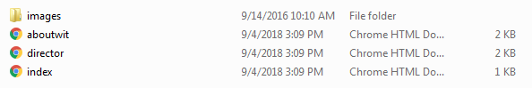
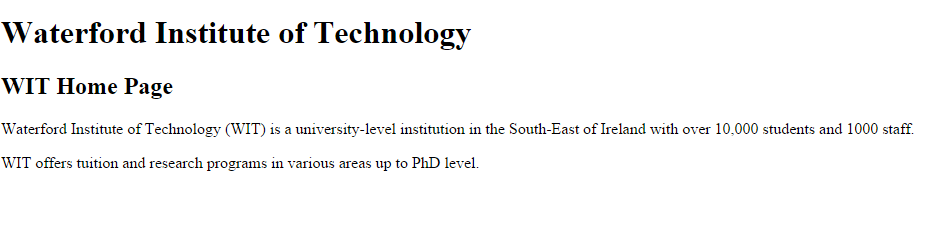
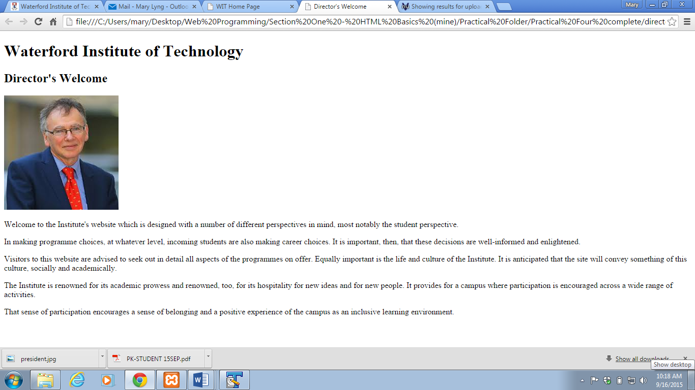
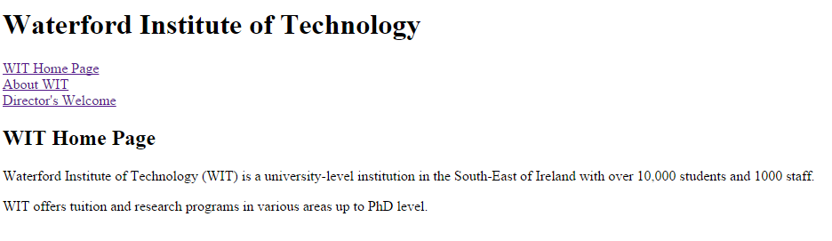
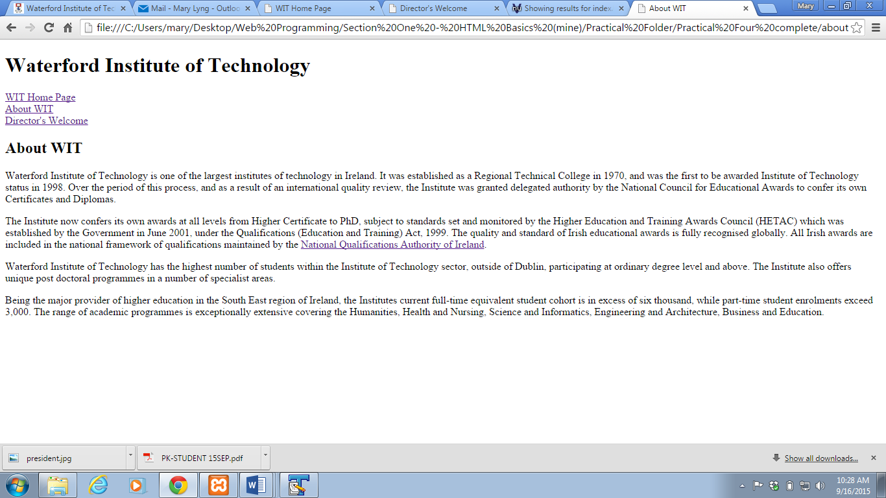

In this lab, you will learn how web pages are linked together.
Hyperlinks, or links, are how you move around the web. An <a> or anchor tag is how you make hyperlinks in HTML. Hyperlinks are basically pointers to other information on the World Wide Web. The other sites might be a file in the same directory, in Japan or anywhere in the world. The syntax varies a little depending on what kind of connection is required to visit the proposed site.
URL stands for Uniform Resource Locator. A URL, basically, is a way to tell your web browser (or other program) where to look for something. If you wanted to make a hypertext link to a page, you would need its URL.
For Example: the URL for Microsoft is http://www.microsoft.com
To make the actual link to the Microsoft page, you would see something like this: Microsoft - a word that is clickable. This is accomplished with the following HTML code:
<a href="http://www.microsoft.com">Microsoft</a>If you want an external link to open in a new tab (so the user doesn't leave your website!) you can use the target attribute, as follows:
<a href="http://www.microsoft.com" target="_blank">Microsoft</a>If the file you want to link to is on your computer (or on the same website), you just need to provide the filename (plus extension) as the URL. For example:
<a href="index.html">Home Page</a>
<a href="aboutwit.html">About WIT</a>
<a href="director.html">Director</a>All of these pages are saved in the same folder, as you can see here:

Note that if the pages were saved in different folders, you would need to include the full path (i.e. the location of the file) so that the browser would be able to find it! For now, just make sure that all the pages you want to link are saved in the same folder.
An anchor is a point in a web page that you wish to go to. You mark the section using the following: <a href = "#name"> where #name is the name of the section.
This code sets this piece of text at the top of the page as an anchor, and gives it the name "top".
<a name="top">Hi! I'm the first piece of text on this page!!!</a>Then, later on, we can link to this area of the page using the hash symbol and the name we defined (so #top). This is done as follows:
<p>I'm way, way, way down at the bottom of the page... Too lazy to scroll back up? That's okay! Click here:
<a href="#top">Back to top</a>To email a contact address from a web page, use <a href = "mailto:email address"> where email address is the address of the contact you wish to email. For example:
<a href="mailto:webdev@wit.ie">Send me a comment</a>When clicked, this will open up the computer's default mail program and start an email to the address you specified. If it doesn't work on the PCs in the lab you're in, it might be because there isn't a default mail program set.
<h1> heading. <h2> heading. 


http://www.qqi.ie. 